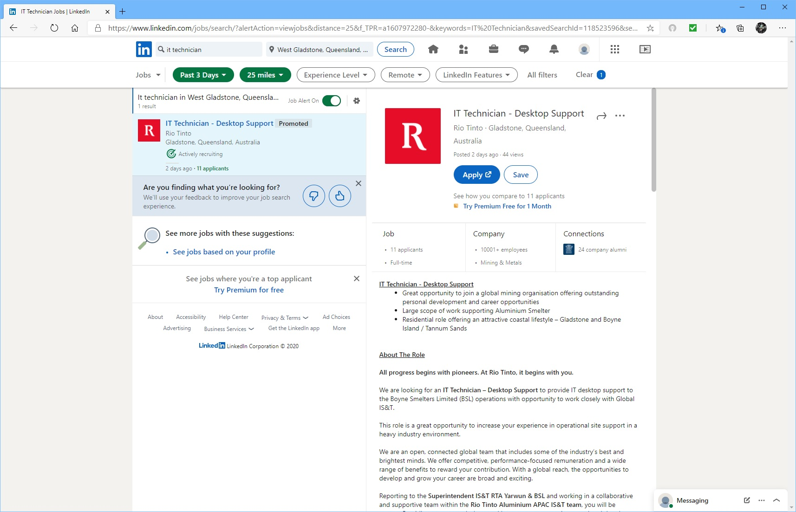

I get a real kick out of fixing problems in a field environment. Oh sure, designing a brand-new network environment for a medium to large start-up would be fun, but once it’s installed, you move on to the next project, you don’t get to watch the network develop or evolve with time and use. That’s why ideally, I’d like to work in corporate/industrial desktop support role. Something where if an issue arises, you would solve the issue individually or as a team, make notes about symptoms of the issue, design ways to mitigate a repeat of the issue, and discuss with colleagues the root cause of the issue as well as other potential issues that you discovered along the way. Some would say this isn’t very ambitious, but it’s a necessary job, and I’m happy to do it. That’s why I get job alerts on my LinkedIn profile like in Figure 3.

Figure 3
This is job currently being advertised Seek.com.au as seen in Figure 4
Figure 4
The requirements for this advertised position are rather lite. They’re only asking for previous experience in IT in a similar environment, an ability to communicate well with others, and currently live in the Gladstone region. There’s no mention on required qualifications, which while unusual, I’d say it’s probably assumed that some level of formal IT qualification is so obvious, goes without saying. That’s fine, I have a Diploma of networking technology under my belt to get me through the door. I communicate very well in my current position, part of my job is to converse with multiple port stakeholders on a regular basis, as well as other sections of my own organisation. I currently live in the Gladstone region, and have done so for much of my life. The problem I have is experience. To this day I have almost no IT experience. I worked in an IT section briefly during my time with the Royal Australian Airforce, but I was more of a gopher than a technician, and it was over eight years ago. My career plan has always been more or less the same since I left high school; receive an IT degree, transition to an entry-level IT position, something in the way of a computer shop or IT business solution group, gain the necessary skills and experience to transition to my ideal job.
To find out more about me, click one of the links below